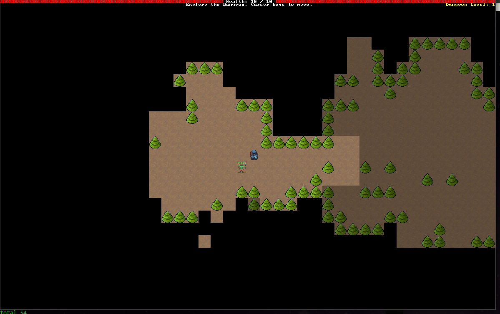

This Month in Rust GameDev #35 - June 2022
Welcome to the 35th issue of the Rust GameDev Workgroup's monthly newsletter. Rust is a systems language pursuing the trifecta: safety, concurrency, and speed. These goals are well-aligned with game development. We hope to build an inviting ecosystem for anyone wishing to use Rust in their development process! Want to get involved? Join the Rust GameDev working group!
You can follow the newsletter creation process by watching the coordination issues. Want something mentioned in the next newsletter? Send us a pull request. Feel free to send PRs about your own projects!
- Announcements
- Game Updates
- Learning Material Updates
- Engine Updates
- Tooling Updates
- Library Updates
- Other News
- Discussions
- Requests for Contribution
- Jobs
Announcements
Rust GameDev Podcast

The Rust Gamedev Podcast features interviews with indie game developers creating titles with the Rust programming language. It covers technical topics as well as the business of open source and commercial indie games development.
In June, the ninth episode was released. It's a chat with Carter Anderson about the Bevy engine, and a dive into its history.
Listen and Subscribe from the following platforms: Rust GameDev Podcast (simplecast), Apple Podcasts, Spotify, RSS Feed, or Google Podcasts.
Rust GameDev Meetup

The 17th Rust Gamedev Meetup took place in June. You can watch the recording of the meetup here on Youtube. Here was the schedule from the meetup:
- Choir - @kvark
- RustConf Arcade Cabinet - @carlosupina
- retime - @Togg
- Graphite - @GraphiteEditor
The meetups take place on the second Saturday every month via the Rust Gamedev Discord server and are also streamed on Twitch. If you would like to show off what you've been working on at the next meetup on July 9th, fill out this form.
Rusty Jam 2
 Aaron, the mascot of the jam
Aaron, the mascot of the jam
The second Rusty Jam just ended! 17 games were completed and submitted over the one-week jam. The games were rated by the community and the top three games are:
- ü•á "Chick the Dog" by Uriopass
- ü•à "A walk around the block" by ramirezmike
- ü•â "Fight for the Frontier" by rand0m and logicprojects
The Rusty Jam will be back, so stay tuned on the Rusty Jam Discord Server for future updates!
RustConf Arcade Cabinet
Carlo is building a custom arcade cabinet that will be at RustConf 2022 in Portland. It is an opportunity for Rust game developers to share their games with the broader community. If you are interested in getting your game on the cabinet, read this Twitter thread and fill out the interest form. The arcade cabinet has been assembled and painted. He is currently in the process of helping developers get their games playable on the machine. If you have a Bevy game, you can use the bevy-rust-arcade crate to quickly get your game compatible. Deadline is the end of July! You can find the latest update here.
Game Updates
Hydrofoil Generation
Hydrofoil Generation (Steam, Facebook, Discord) is a realistic sailing/foiling inshore simulator in development for PC/Steam that will put you in the driving seat of modern competitive sailing. Hydrofoil Generation is based on a custom-made DirectX 11 based engine in Rust.
June saw a lot of features added to the game, most notables being "New TV Overlays", "Control Assists", "Ropes Rendering" plus several physics improvements. Stefano Casillo, the developer went through all of them in a recent devlog.
Work in July will focus on the physics implementation of a new boat, a foiling multihull coming with her own set of new challenges.
Hydrofoil Generation is targeting a Q4 2022 Early Access release on Steam.
RuggRogue

RuggRogue by @tung is a simple web-playable roguelike, inspired by the Rust Roguelike Tutorial and made using Rust and SDL. It can be played natively on Windows and Linux, and in the browser thanks to Emscripten.
Features:
- Discover new monsters and equipment the deeper you go.
- Hunger and regeneration: stay fed and stay healed!
- Choose between graphical tiles and ASCII display.
- Menu-based UI with hotkeys.
- Auto-run to quickly follow corridors and cross open space.
- Save and load system.
- New Game Plus mode!
The source code is complemented by the RuggRogue Source Code Guide, a 23-chapter technical web book covering the ideas, algorithms, and structure of the code.
Discussions: /r/rust_gamedev, /r/roguelikes
Rust Game Ports

Rust Game Ports is a port of several games to Rust/pure-Rust game engines.
This month the last planned port has been completed; the games are:
- Boing (Pong clone, ported to ggez)
- Cavern (Bubble Bobble clone, ported to Macroquad)
- Rusty Roguelike (from the Hands-on Rust book; ECS ported to Bevy)
- Soccer (Sensible Soccer clone, ported to Fyrox)
A Bevy ECS tutorial, based on Rusty Roguelike, has been published, and it's announced in this newsletter.
vetovoima
 vetovoima gravity manipulation
vetovoima gravity manipulation
vetovoima by @MatiasKlemola is an arcade game where you control gravity!
The world is a hollow circle with a star in the center. You're the Yellow Block and your goal is to navigate through shifting debris to the Tall Blue Block before the time runs out. The challenge is to survive the chaos that ensues from changes to gravity.
vetovoima is built with the Bevy engine using Rapier for physics and Lyon for rendering (via Bevy plugins).
The alpha 1 build was recently released.
Source available on GitHub.
Botnet
Botnet is an upcoming programming-based multiplayer game, where you write scripts (compiled to WebAssembly) to control robots. Coordinate your bots to gather resources, build new industries, and expand your control of the server.
This month saw the start of the project, and a majority of the foundational code was written. Next month we'll be adding more features, and aim to flesh out the game beyond basic pathfinding and resource harvesting.
Interested in contributing? Head over to the github discussion page and suggest some ideas!
Star Machine
Star Machine by @Seldom_SE is a puzzle game built in Bevy, where you wire together components to escape each level.
Although its development is currently inactive, the developer recently made a video demo of the early levels.
Quoridor-rs

Quoridor-rs by @baehyunsol is a Quoridor game implemented in Macroquad.
Quoridor is a 2-4 player strategy board game. Each player has a pawn. They move the pawn or place a wall each round. The objective of the game is to move the pawn to the opposite side of the board.
The game implements most of the basic Quoridor features, but it only supports 2 players, not 3 or 4. It also doesn't have AI players or network games.
Veloren
A glider ride above the woods at night
Veloren is an open world, open-source voxel RPG inspired by Dwarf Fortress and Cube World.
In June, a memory issue was found within the graphics stack. Weather is also getting closer to completion. There is a large write-up about it in one of this month's blog posts.
Lots of work has also gone into optimizing the Site2 system. Site2 is used to create many different shapes around the world, such as houses in towns, or citadels around the world. With these optimizations, it will be significantly easier to render chunks, which will have a dramatic effect on their load time. You can read more about these optimizations in this blog post.
June's full weekly devlogs: "This Week In Veloren...": #175, #176, #177, #178.
Harvest Hero Origins - Summer Heat Update!
Gemdrop Games have worked with their friends at Octosoft to bring Shroomella to Harvest Hero Origins!
Renaine is an upcoming Action Platformer game about Aine, an immortal Phoenix Knight.
Shroomella is a Mushroom Shroom witch aiding Aine on her quest! In Harvest Hero Origins, she uses her variety of magical mushrooms to fight off the endless Grooble hordes.
On top of that, they're adding:
- A new map
- Two new cards
- Two new enemies
- A revised story boss fight
The game is built on the Emerald Game Engine.
Chimera Rancher
Chimera Rancher is a game where you must defend your ranch from an angry hoard of villagers with the help of your chimera friends!
Submitted as part of Rusty jam #2 by cdsupina, Nightly Side, hedgein, and tigleym. This game was developed using the bevy game engine.
Engine Updates
ggez 0.8.0-rc0

ggez by @icefoxen, @nobbele, and @PSteinhaus is a cross-platform game framework for making 2D games with minimum friction. It aims to implement an API based on the LÖVE game framework.
This version has finally moved ggez away from pre-ll gfx and into the world of wgpu! This hopefully means fewer bugs, greater stability, and easier maintainability at the cost of some low-performance devices such as the Raspberry Pi.
As for the user-facing API:
- Instead of module functions, you now have methods on sub-contexts, which
look like
ctx.keyboard.is_key_pressed(key). - You are now required to pass around an explicit canvas to draw onto.
DrawParamnow has a Z (aka layer) parameter, so you don't have to draw objects in order.- Shaders are far easier to use, via normal Rust structs with a simple derive.
As this is a rather large update and a first release candidate, there are plenty of bugs that are currently being fixed - please send any issues you encounter to their issue tracker!
Discussions: /r/rust_gamedev
Dims
Dims (Twitter, Discord, YouTube) is a pre-alpha collaborative open-world creation platform. Users can hop in sessions and build a game together, allowing everyone to bring out their inner game-maker.
June brought about several developments for the platform, including:
- Several development and testing streams, with the latest being a recreation of Rhodes from Red Dead Redemption 2 within the engine
- A new audio engine with advanced real-time synthesis and composition capabilities, including network synchronisation
- Improved terrain manipulation tools, including new brushes, biome presets,
and more intuitive UI
- Choose between "Nordic Mountains" ⛰ and "Colorado Deserts" üèú
- Various improvements to the rendering engine, including decal and billboard rendering, FBX loading, macOS support, and more
- Initial work on a versatile new scripting system, with independent threads of execution for every object
Want to try Dims out for yourself? Come join the Discord to be notified of future public tests, see the latest features before everyone else, and to talk to the devs personally.
miniquad
miniquad is a safe and cross-platform rendering library focused on portability and low-end platform support.
In versions prior to 0.3, it was virtually impossible to integrate, for example, a big in-app payments or advertisement SDK into a Miniquad Android game. 0.3 has solved this, giving the possibility to interop with any Java code. The developer has posted a write-up of this functionality on the macroquad site.
Learning Material Updates
Brontefy Me Devlog #3

@hedgein continues the Brontefy Me series! In this latest devlog, she gives an update on where Brontefy Me will be heading and why it slowed down. During a recent stream, it was also mentioned that @hedgein is leaning towards hosting a monthly Brontefy Me Game Jam for her community, as game jams give her better accountability. Further updates will be given in her Discord server.
Learn Bevy's ECS by ripping off someone else's project

"Learn Bevy's ECS by ripping off someone else's project" is a mini-book that uses the game Rusty Roguelike from the book Hands-on Rust as a base, in order to explain Bevy's ECS.
The idea is for a beginner to learn ECS concepts from the base book, then apply them using Bevy; the structure of the game is ideal for a gentle introduction to ECS architecture.
Bevy Basics
@PhaestusFox is close to finishing the Bevy Basics User Input mini-series.
In this 5 part mini-series, they cover how a developer can go about collecting user input using the Bevy game engine.
- Episode 1 is an overview of Bevy's various input structs
- Episode 2 covers keyboard presses
- Episode 3 covers mouse clicks and movement
- Episode 4 covers gamepad buttons and joysticks
- Episode 5 covers touchscreen or drawing pad strokes
Tooling Updates
Noumenal
Noumenal (App Store, Discord, Twitter) by @HackerFoo is an elegant 3D solid modeling app for iOS.
After a final stretch of performance improvements, bug fixes, and even some new features, Noumenal was released and is available on Apple's App Store!
Discussion: /r/rust
Graphite

Graphite (website, GitHub, Discord, Twitter) is a free, in-development raster and vector 2D graphics editor. It will be powered by a node graph compositing engine that supercharges your layer stack, providing a completely non-destructive editing experience.
June's sprint 16 focused mainly on bug fixes and big under-the-hood changes:
- Ahead of the curve: A long-awaited refactor replaces the underlying Bézier curve data structure in alignment with requirements for Pen tool improvements and the upcoming node system.
- Sending mixed messages: The internal messaging system was upgraded to sequence the message processing in a more predictable stack-based order. A new subscription-based event broadcaster was integrated as well.
- Back on the menu: The application menu bar content definitions were moved from the JS frontend to a permanent home in the Rust backend.
Open the Graphite editor in your browser to give it a try and share your creations with #MadeWithGraphite on Twitter.
quad-gif
quad-gif by @ollej is a tiny library that can be used in a Macroquad game to show a looping GIF animation. It also includes a small example binary that displays a GIF in the middle of a window. The library can also be used as a simple way to make an animation from a list of textures.
Library Updates
psf2
psf2 is a minimal, unopinionated, no-std parser for the v2 PC Screen Font bitmap font format.
PSF2 fonts are simple, compact, and readily available due to their use as Linux console fonts. They are extremely fast to draw at their intended resolution, making them a great choice to quickly get text on the screen, especially when a low-resolution, fixed-width aesthetic is desired.
The psf2 crate parses font data, exposing font size, glyph lookup, and iterators to traverse a glyph's bitmap for easy rendering. Due to its limited scope, it is much smaller and faster than conventional text rasterizers but cannot support variable-width, anti-aliased, or shaped text.
ezinput
ezinput by @eexsty is a powerful input-agnostic library, targeting complete support for axis and button handling in the Bevy game engine.
EZInput strives to be simple as possible using the nifty ECS features that Bevy offers, while still being powerful and flexible without using any unsafe code. This and the previous 0.3.* releases were targeted for performance and ergonomics improvements, including a new declarative macro to allow for cleaner and smaller code.
glam v0.21
glam is a simple and fast linear algebra crate for games and graphics.
This month version 0.21 of glam was released. Because glam is not a generic
library, when support was added for f64, i32, and u32 types back in glam
0.12, macros were used internally to avoid a lot of code duplication. This
unfortunately obfuscated the internals of glam for anyone who needed to view the
source.
As of the 0.21 release the majority of glam code is now generated using an
offline tool and committed to the repo. The macros that were used to define
glam's internal implementation are gone. This means what users see when reading
docs or stepping through glam in the debugger is plain old Rust code. Many
functions have also been made const fn removing the need for macros to create
const values.
kajiya
kajiya by @h3r2tic is an experimental real-time global illumination renderer.
In June, a long-standing branch landed, bringing with it a complete overhaul of indirect lighting. The new implementation uses spatiotemporal reservoir resampling (ReSTIR) and a novel irradiance cache, bringing forth larger scenes, quicker response to lighting changes, and less noise.
A detailed overview of the new global illumination techniques is available, complete with animated diagrams!
June has also seen the addition of texture compression, automatic exposure, a new display rendering transform, and a simplification of the interface. The viewer app now supports drag-and-drop of scene files, glTF models, and HDRI backdrops.
Discussions: twitter (0.2 release), twitter (texture compression).
Notan v0.5
Notan is a simple and portable layer designed to create your own multimedia apps on top of it without worrying about platform-specific code.
The main goal is to provide a set of APIs and tools that can be used to create your project in an ergonomic manner without enforcing any structure or pattern, always trying to stay out of your way. The idea is that you can use it as a foundation layer or backend for your next app, game engine, or game.
The latest version v0.5 fixes multiple bugs, improves EGUI support and adds a new feature to export texture to png easily.
Other News
- Other game updates:
- Fires of Eschaton is a PvP focused turn-based fantasy game, currently under development.
- Idu is testing out some new water physics.
- Combine and Conquer has a new devlog about its sound support.
- Fish Folly is a new Fyrox showcase game, inspired by Fall Guys.
- Punchy is a beat-em-up spin off of Fish Fight, built with Bevy.
- Jungle Chess is a WASM implementation of a Chinese board game.
- Croquet is working on synchronized physics, using Rapier.
- Bevy City is a voxel city generator, built with Bevy.
- Measure Once is a game about cutting wood into the right shapes.
- Galactic Mess has added new outfits and weapons.
- Other learning material updates:
- Rustacean Station interviewed the developer of egui.
- Rusteroids is a video tutorial series, building an asteroids clone with Rust and SDL2.
- NVIDIA GPU Profiling with Rust is an introduction on how to use NVIDIA's NSight tools with Rust.
- Practical Programming with Dr. Xu has continued their WGPU tutorial series.
- Anthropic Studios (developers of Way of Rhea) posted a dev interview video.
- Lyrapuff posted a video showing how to render a triangle with Vulkan and Rust.
- Other engine updates:
- pufferfish is a new, opinionated 2D game framework.
- Other tooling updates:
- GBemulator is a Game Boy emulator written from scratch.
- Other library updates:
- bevy_mod_picking released version 0.7 of their Bevy mouse picking plugin.
- bevy_mod_outline is a Bevy plugin for drawing outlines around meshes.
- Bevy YOLECK is a crate that allows Bevy games to be their own level editor.
- bevy_mod_raycast released version 0.5 of their raycasting plugin.
- taffy is a cross-platform UI layout library.
Discussions
- /r/rust_gamedev:
- "Shopping list" (a list of things that are missing from the ecosystem)
- "Hands-on Rust: Further reading"
- "How can I start developing a 3D game engine?"
- "Bevy or Fyrox for 3D Game Development?"
Requests for Contribution
- 'Are We Game Yet?' wants to know about projects/games/resources that aren't listed yet.
- Graphite is looking for contributors to help build the new node graph and 2D rendering systems.
- winit's "difficulty: easy" issues.
- Backroll-rs, a new networking library.
- Embark's open issues (embark.rs).
- wgpu's "help wanted" issues.
- luminance's "low hanging fruit" issues.
- ggez's "good first issue" issues.
- Veloren's "beginner" issues.
- Amethyst's "good first issue" issues.
- A/B Street's "good first issue" issues.
- Mun's "good first issue" issues.
- SIMple Mechanic's good first issues.
- Bevy's "good first issue" issues.
Jobs
- DIMS (Stockholm/Remote): Various roles, open applications accepted
- Embark Studios (Stockholm/Hybrid Remote): Various roles, open applications accepted
- Mutate (Remote): Rust Backend Software Engineer
That's all news for today, thanks for reading!
Want something mentioned in the next newsletter? Send us a pull request.
Also, subscribe to @rust_gamedev on Twitter or /r/rust_gamedev subreddit if you want to receive fresh news!
Discuss this post on: /r/rust_gamedev, Twitter, Discord.